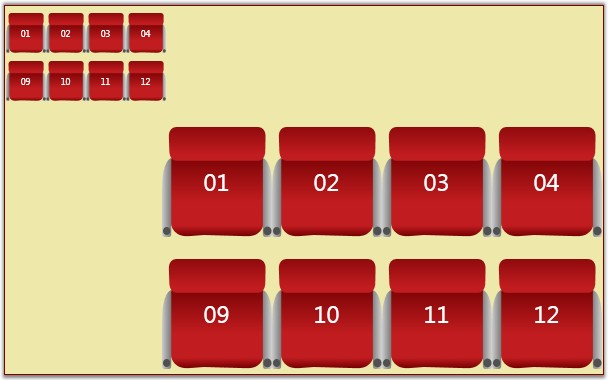

The diagram page can be zoomed in and out. Zooming can be achieved in the following two ways.
· Using the zoom commands.
· Using the mouse wheel.
Table 71: Property Table
|
Property |
Description |
Type of the property |
Value it accepts |
Any other dependencies/ sub properties associated |
|
IsZoomEnabled |
Gets or sets a value indicating whether zoom is enabled or not.
Default value is True. |
Dependency property |
Boolean(True/False) |
No |
|
ZoomFactor |
Gets or sets a factor for the zoom.
Default value is 0.2. |
Dependency property |
Double |
No |
Steps to zooming using the zoom commands
Zooming in
The following code can be added to a Button's click event to facilitate zooming in.
|
[C#]
DiagramView diagramView = new DiagramView(); ZoomCommands.ZoomIn.Execute(diagramView.Page, diagramView); |
|
[VB]
Dim diagramView As New DiagramView() ZoomCommands.ZoomIn.Execute(diagramView.Page, diagramView) |
The diagram page elements will be zoomed in each time the button is clicked.
Zoom out
The following code can be added to a button's click event to facilitate zooming out.
|
[C#]
DiagramView diagramView = new DiagramView(); ZoomCommands.ZoomOut.Execute(diagramView.Page, diagramView); |
|
[VB]
Dim diagramView As New DiagramView() ZoomCommands.ZoomOut.Execute(diagramView.Page, diagramView) |
The diagram page elements will be zoomed out each time the button is clicked.
Steps to zooming using the mouse wheel
1. Ensure the IsZoomEnabled property is set to True. By default it is set to true.
|
[C#]
DiagramView diagramView = new DiagramView(); diagramView.IsZoomEnabled = true; |
|
[VB]
Dim diagramView As New DiagramView() diagramView.IsZoomEnabled = True |
2. Now while the CTRL key is pressed, roll the mouse wheel up to zoom in or down to zoom out.
 Note: All other operations can be performed on
page elements while IsZoomEnabled is set to True.
Note: All other operations can be performed on
page elements while IsZoomEnabled is set to True.

Figure 148: Zooming the Diagram Control
Essential Diagram WPF allows you to set the factor by which you can zoom in or out. This factor can be specified using the ZoomFactor property. The default value is 0.2.
The following code can be used to set the ZoomFactor property.
|
[XAML]
<Window x:Class="WpfApplication1.Window1" xmlns="http://schemas.microsoft.com/winfx/2006/xaml/presentation" xmlns:x="http://schemas.microsoft.com/winfx/2006/xaml" Title="EssentialDiagramWPF" Height="400" Width="600" xmlns:sfdiagram="clr-namespace:Syncfusion.Windows.Diagram;assembly=Syncfusion.Diagram.WPF" xmlns:local="clr-namespace:WpfApplication1"> <Grid Name="diagramgrid"> <sfdiagram:DiagramControl IsSymbolPaletteEnabled="True"> <sfdiagram:DiagramControl.View> <sfdiagram:DiagramView Name="diagramView" ZoomFactor="0.5"> </sfdiagram:DiagramView> </sfdiagram:DiagramControl.View> </sfdiagram:DiagramControl> </Grid> </Window> |
|
[C#]
DiagramView diagramView = new DiagramView(); diagramView.ZoomFactor = 0.5; |
|
[VB]
Dim diagramView As New DiagramView() diagramView.ZoomFactor = 0.5 |